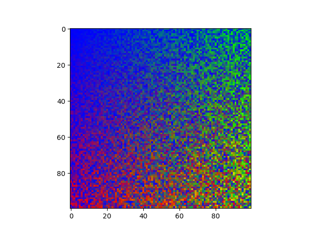
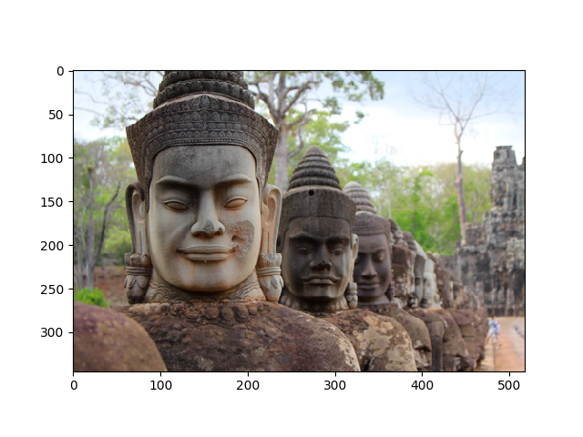
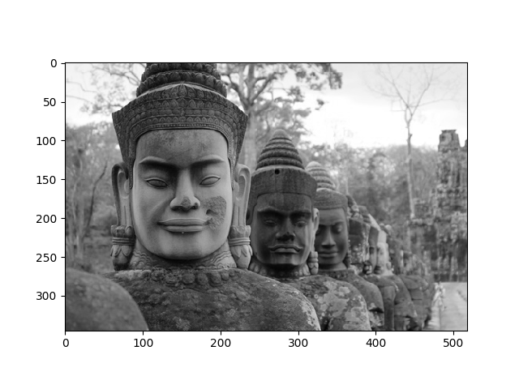
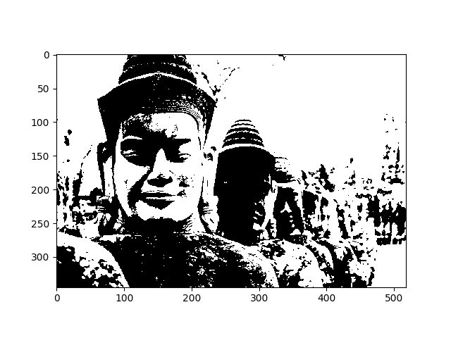

Versión borrador / preliminar
Este documento es una versión preliminar para uso interno. Si encuentra algún problema o error, o si tiene algún comentario por favor repórtelo a los autores.
Imágenes RGB#
Objetivo de la sección
El objetivo de esta sección es explicar los conceptos más básicos sobre el uso de imágenes en un computador, como un caso de estudio para el uso de matrices.
Prácticamente todos los dispositivos electrónicos programables de hoy en día incluyen funcionalidades para capturar, almacenar, transformar y analizar imágenes. Por ejemplo, los celulares inteligentes ofrecen múltiples mecanismos para tomar fotografías, transformarlas (rotar, cambiar el tamaño, recortar), hacerles retoques (ajustar los colores, agregar textos e imágenes), almacenarlas en la memoria y finalmente compartirlas con otros dispositivos. En el fondo, todas estas actividades implican la creación de matrices, su recorrido haciendo cálculos, y su modificación.
En esta sección estudiaremos cómo una imagen se puede representar como una matriz de pixeles para ser manipulada. Como parte de esto, estudiaremos algunos algoritmos importantes para hacer modificaciones sobre imágenes.
Imágenes RGB#
Una imagen digital se representa usualmente con una matriz de pixeles, donde cada pixel es un punto de la imagen y tiene un determinado color [1]. Esto es análogo a como funcionan los monitores y pantallas, los cuales están compuestos por componentes electrónicos también llamados pixeles y que son capaces de cambiar de color para representar un punto de algún color. Cuando nosotros vemos una imagen en la pantalla, lo que estamos viendo en realidad es una grilla con puntos de colores y nuestro cerebro se encarga de convertirlo en una imagen suavizada y con algún sentido.
Por razones tanto históricas como técnicas, los pixeles en una pantalla o monitor usualmente están formados por 3 componentes que son capaces cada uno de producir un solo color con una intensidad variable: uno de estos componentes es capaz de producir rojos, otro sólo produce verdes y el tercero sólo produce azules. Como son tan pequeños y nuestros ojos no logran distinguirlos, los colores de estos tres componentes se combinan en nuestro cerebro para producir un solo color. Lo interesante de esto es que prácticamente cualquier color visible para un humano puede construirse como combinaciones de los tres colores primarios (aditivos) rojo, verde y azul.
De regreso al mundo de las imagénes digitales, los pixeles de una imagen se representan usualmente usando combinaciones de los mismos tres colores. A esto se le llama el modelo RGB y se ha llegado a un estándar en el cual la intensidad de cada uno de los tres colores se representa con un número entre 0 y 255 [2]: 0 significa que el color es tan oscuro que se ve negro mientras que 255 significa que el color está en su máxima intensidad. De esta manera un pixel negro en una imagen será un pixel en el cual los tres colores tengan intensidad 0, un pixel de color rojo puro será un pixel con intensidad 255 en el rojo e intensidad 0 en verde y azul, y un pixel blanco tendrá intensidad 255 en los tres componentes. La siguiente tabla muestra algunos colores con las intensidades de sus componentes:
Este sistema permite representar más de 16 millones de colores diferentes (2^32) a través de la combinación de 256 niveles de rojo, con 256 niveles de verde y 256 niveles de azul. El rango 0 - 255 podría parecer arbitrario pero tiene muchísimo sentido: usando 8 bits (1 byte) se pueden representar los números entre 0 y 255, así que el sistema RGB requiere de exactamente 3 bytes por cada pixel de una imagen.
Algoritmos básicos sobre imágenes#
Crear imágenes#
Considerando entonces que una imagen se representará naturalmente en Python como una matriz de tres números (un nivel de rojo, un nivel de verde y un componente azul), lo más natural será representar cada imagen como una matriz de tuplas. El siguiente programa muestra cómo se construiría una nueva imagen cuadrada de ancho x ancho pixeles, donde todos los pixeles serían negros.
def generar_imagen_negra(ancho: int)->list:
imagen = []
for i in range(0, ancho):
fila = []
for j in range(0, ancho):
rojo = 0.0
verde = 0.0
azul = 0.0
pixel = (rojo, verde, azul)
fila.append(pixel)
imagen.append(fila)
return imagen
Ahora vamos a construir una nueva función capaz de generar una imagen también cuadrada pero con pixeles de colores aleatorios.
import random
def generar_imagen_tuplas(ancho: int)->list:
factor = 1/ancho
imagen = []
for i in range(0, ancho):
fila = []
for j in range(0, ancho):
rojo = random.randint(0, i)/ancho
verde = random.randint(0, j)/ancho
azul = max(0,1 - rojo - verde)
pixel = (rojo*255, verde*255, azul*255)
fila.append(pixel)
imagen.append(fila)
return imagen
El resultado de invocar esta función una vez y de visualizar la matriz resultante en la pantalla se muestra en la siguiente imagen. El código es muy similar al de la función anterior y sólo se diferencia en la forma de generar números de forma aleatoria para el componente rojo, verde y azul de cada pixel. Más adelante en esta sección mostraremos cómo visualizar la imagen.

Para el resto de esta sección usaremos la siguiente imagen para ilustrar el efecto de cada algoritmo.

Convertir a escala de grises#
Como ya vimos, en el modelo RGB el negro se forma con componentes rojos, verde y azul con valor 0, mientras que el blanco se forma con los 3 componentes con su máximo valor. Los colores intermedio (grises) tienen la propiedad de tener los tres componentes con la misma intensidad. Así, un pixel con valores (50, 50, 50) será un gris bastante oscuro, mientras que un pixel con valores (200, 200, 200) será un gris bastante claro.
Convertir una imagen a escala de grises requiere entonces recorrer la imagen entera, pixel por pixel, y modificar los componentes rojo, verde y azul para que sean iguales. La siguiente función hace esta tarea: calcula el valor promedio de los tres componentes y le asigna este valor a los tres componentes en cada uno de los pixeles. De esta manera se conserva la intensidad (qué tan iluminado es el pixel) pero se pierde el tono de todos los pixeles.
def convertir_a_grises(imagen: list)->None:
alto = len(imagen)
ancho = len(imagen[0])
for i in range(0, alto):
for j in range(0, ancho):
rojo, verde, azul = imagen[i][j]
gris = (rojo + verde + azul) // 3
imagen[i][j] = (gris, gris, gris)
Al aplicar esta función a la imagen de muestra el resultado es el que se observa en la siguiente imagen.

Binarizar#
Otra técnica que se aplica sobre muchas imágenes transforma los pixeles para que sean sólo negros o blancos. Para esto se calcula el nivel de intensidad original de cada pixel y se convierte en negro o blanco según si la intensidad está por debajo o por encima de un umbral definido. Es decir, todos los pixeles cuya intensidad esté por debajo del umbral se convertirán en pixeles negros mientras que el resto de convertirán en pixeles blancos.
La siguiente función implemente el algoritmo de binarización (o umbralización) aplicado a una imagen usando un umbral que llega por parámetro.
def binarizar(imagen: list, umbral: int)->None:
alto = len(imagen)
ancho = len(imagen[0])
for i in range(0, alto):
for j in range(0, ancho):
rojo, verde, azul = imagen[i][j]
gris = (rojo + verde + azul) // 3
if gris < umbral:
imagen[i][j] = (0,0,0)
else:
imagen[i][j] = (255,255, 255)
Al aplicar esta función a la imagen de muestra, usando un umbral de 100, el resultado es el que se observa en la siguiente imagen.

Visualización con Matplotlib#
A continuación explicaremos un mecanismo que nos permite visualizar las imágenes con las cuales hemos estado trabajando. El mecanismo está basado en el uso de la librería Matplotlib, la cual se encuentra disponible para su descarga gratuita en casi cualquier plataforma. Esta librería se ha convertido en un estándar para el manejo y creación de gráficas usando Python, así que es conveniente familiarizarse con su uso.
Matplotlib ofrece como ventaja adicional ser capaz de interpretar diferentes formatos de imágenes. Es decir que Matplotlib nos ofrece las funcionalidades necesarias para poder cargar imágenes en formato jpg o png (entre otros), sin que nosotros tengamos que preocuparnos por estos aspectos.
El siguiente programa muestra cómo se puede utilizar esta librería para cargar una imagen desde un archivo y para visualizarla dentro de un programa. Si se ejecuta este programa, y hay una imagen llamada “muestra.jpg” en la carpeta donde se está ejecutando, el resultado debería ser que se despliegue la imagen en una nueva ventana.
import matplotlib.image as mpimg
import matplotlib.pyplot as plt
def cargar_imagen_matriz(ruta_imagen: str)-> list:
""" Carga la imagen que se encuentra en la ruta dada.
Parámetros:
ruta_imagen (str) Ruta donde se encuentra la imagen a cargar.
Retorno:
list: Matriz de MxNx3
"""
imagen = mpimg.imread(ruta_imagen)
return imagen
def visualizar_imagen_matriz(imagen: list) -> None:
""" Muestra la imagen recibida
Parámetros:
imagen (list): Matriz de MxNx3 que representa la imagen a visualizar.
"""
plt.imshow(imagen)
plt.show()
imagen = cargar_imagen_matriz("muestra.jpg")
visualizar_imagen_matriz(imagen)
Algo muy importante que se tiene que tener en cuenta cuando se trabaje con Matplotlib es que la librería espera que los colores se representen con números entre 0 y 255 si son enteros, o entre 0 y 1 si son flotantes. Esto puede ser un poco confuso al principio, así que lo más conveniente es siempre usar enteros o siempre usar flotantes y no combinarlos nunca.
Listas de Listas de Listas vs. Listas de Listas de Tuplas#
Las dos funciones anteriores, aunque son muy sencillas tienen un problema que las hace incompatibles con los algoritmos que hemos trabajado en esta sección: en lugar de representar las imágenes como matrices de tuplas, representan las imágenes con matrices de 3 dimensiones, donde la tercera dimensión es de tamaño 3 y permite representar cada uno de los tres componentes de una imagen. Esto quiere decir que en la posición [i][j] de la imagen que retorna la función cargar_imagen_matriz no hay una tupla sino hay una lista con tres valores.
Las siguientes funciones son versiones modificadas de las funciones anteriores que se encargan de convertir entre la representación con tuplas y la representación de Matplotlib, de forma que se pueda usar la librería para cargar los archivos y para visualizar las imágenes [3].
def visualizar_imagen(imagen: list) -> None:
""" Muestra la imagen recibida
Parámetros:
imagen (list): Matriz de MxN con tuplas (R,G,B) que representan la imagen a visualizar.
"""
alto = len(imagen)
ancho = len(imagen[0])
# Construir una matriz para representar la imagen.
# Esta matriz tendrá tres dimensiones
matriz = []
for i in range(alto):
fila = []
for j in range(ancho):
# convertir la tupla a una lista
r, g, b = imagen[i][j]
fila.append([r, g, b])
matriz.append(fila)
plt.imshow(matriz)
plt.show()
def cargar_imagen(ruta_imagen: str)-> list:
""" Carga la imagen que se encuentra en la ruta dada.
Parámetros:
ruta_imagen (str) Ruta donde se encuentra la imagen a cargar.
Retorno:
list: Matriz de MxN con tuplas (R,G,B).
"""
matriz = mpimg.imread(ruta_imagen).tolist()
alto = len(matriz)
ancho = len(matriz[0])
# Construir una matriz para representar la imagen.
# Esta matriz tendrá dos dimensiones y tuplas en cada casilla.
imagen = []
for i in range(alto):
fila = []
for j in range(ancho):
# Extraer los componentes. Note que no se puede desempaquetar.
r = matriz[i][j][0]
g = matriz[i][j][1]
b = matriz[i][j][2]
# Construir la tupla equivalente y agregarla a la imagen
tupla = (r, g, b)
fila.append(tupla)
imagen.append(fila)
return imagen
Ejercicios#
Escriba una función que tome una imagen y calcule su negativo. El negativo se calcula invirtiendo los 3 componentes de cada pixel de tal forma que su nuevo valor sea igual a 255 menor el valor original.
Escriba una función que reciba una imagen y una máscara y haga la convolución entre la imagen y la máscara. Una convolución se hace igual que como se aplicó el algoritmo de “Sharpening” con las siguientes diferencias:
La máscara puede tener cualquier tamaño mientras sea cuadrada
Los valores de la máscara pueden sumar cualquier valor. En caso de que la suma sea diferente a 1, se debe dividir el valor de cada componente por el valor total de la máscara (si es positivo).
Escriba una función que reciba una imagen y retorne tres imágenes en escala de grises que representen cada una un canal diferente (rojo, verde y azul). Esto quiere decir que en la imagen del canal rojo la intensidad de los pixeles deberá corresponder a la intensidad del color rojo en los pixeles de la imagen original. Algo similar debe ocurrir con las imágenes de los canales verde y azul.
Escriba una función que reciba tres imágenes en escala de grises correspondientes a los tres canales de una imagen y produzca una imagen combinada. Este mecanismo fue utilizado por el fotógrafo Sergey Prokudin-Gorsky a finales del siglo XIX para producir fotografías en color a partir de fotografías en blanco y negro tomadas con filtros de colores.
Escriba una función que reciba una imagen y una lista ordenada de umbrales y produzca una imagen donde los pixeles se hayan clasificado de acuerdo al umbral donde pertenezcan. Por ejemplo, si la lista de umbrales tiene los valores [50, 100, 150], entonces:
todo pixel con intensidad menor a 50 se volverá negro
todo pixel con intensidad mayor a 150 se volverá blanco
todo pixel con intensidad entre 50 y 100 se volverá un gris con intensidad 75
todo pixel con intensidad entre 100 y 150 se volverá un gris con intensidad 125
Escriba una función que rote a la derecha una imagen cuadrada. Para probar, utilice una imagen con la que sea fácil distinguir que la rotación es la correcta.
Escriba una función que rote a la izquierda una imagen cuadrada. Para probar, utilice una imagen con la que sea fácil distinguir que la rotación es la correcta.
Escriba una función que refleje horizontalmente una imagen cuadrada. Para probar, utilice una imagen con la que sea fácil distinguir que la rotación es la correcta.
Escriba una función que rote a la derecha una imagen rectangular. Para probar, utilice una imagen con la que sea fácil distinguir que la rotación es la correcta.
Escriba una función que rote a la izquierda una imagen rectangular. Para probar, utilice una imagen con la que sea fácil distinguir que la rotación es la correcta.
Más allá de Python: formatos de imágenes#
Un aspecto importante del manejo de imágenes que no se tocó en esta sección tiene que ver con los formatos utilizados para almacenar las imágenes. Cada formato ofrece diferentes ventajas y desventajas con respecto a aspectos como el nivel de compresión, el tamaño de las imágenes, la cantidad de cálculos necesarios para abrir o guardar un archivo, y la cantidad de información que se pierde debido a la compresión.
A continuación presentamos algunos de los formatos más populares.
BMP - BitMap#
Este es uno de los formatos más simples puesto que almacena la información sin ningún tipo de compresión y utilizando una estructura muy similar a la que hemos estado discutiendo. Es decir, dentro de un archivo bmp se almacena la información del componente rojo, del componente verde y del componente azul de cada uno de los pixeles que forman la imagen. Esto hace que leer y escribir un archivo bmp sea muy fácil y rápido, pero lleva a archivos que pueden ser muy grandes. Por ejemplo, una imagen totalmente blanca de 320x240 pixeles ocupa en el disco aproximadamente 225kb debido a que cada uno de los 76800 pixeles requiere 3 bytes para almacenar su color.
GIF - Graphics Interchange Format / PNG - Portable Network Graphics#
Los formatos GIF y PNG son conceptualmente muy similares entre ellos y se basan en la idea de incluir una paleta de colores en el archivo de la imagen, para luego no tener que describir cada color. Usualmente la paleta de colores contiene hasta 256 colores, así que cada pixel se puede representar usando sólo 1 byte en lugar de los tres bytes que utiliza bmp. Adicionalmente, GIF y PNG utilizan un algoritmo de compresión sin pérdida que logra disminuir el espacio utilizado, garantizando al mismo tiempo que no se pierda información. Gracias a estas características la misma imagen blanca de 320x240 pixeles que ocupaba 225kb como un bmp, ocupa 1.5kb como png y 426b como gif.
A pesar de todo esto, los dos formatos tienen una importante limitación: debido al uso de la paleta de colores, una imagen almacenada en estos formatos no debería tener una altísima variedad de colores. Esto hace que sea poco eficiente almacenar fotografías utilizando este formato. En el peor de los casos, se podría perder información porque, para reducir el tamaño de la paleta, colores similares podrían agruparse dando origen a defectos y zonas de baja calidad en las imágenes. Por este motivo, GIF y PNG son buenos formatos para almacenar especialmente imágenes creadas digitalmente y con una limitada gama de colores.
JPEG / JPG - Joint Photographic Experts Group#
A diferencia de los anteriores, el formato JPG utiliza un algoritmo de compresión en el que sí se pierde información, pero de forma prácticamente imperceptible para un usuario. Como no tiene una paleta, JPG puede utilizar todos los colores que sean necesarios, por ejemplo en una foto. Donde se pierde información es en la agrupación de pixeles cercanos que tengan colores muy similares, los cuales se combinan para ganar espacio.
JPG es el formato más utilizado en el mundo para almacenar fotografías puesto que ofrece un buen compromiso entre la calidad de las imágenes y la cantidad de espacio que requiere su almacenamiento. Además, de ser necesario es posible ajustar el nivel de compresión para incrementar la calidad de las imágenes a costa de la cantidad de espacio utilizado.
Para el caso de nuestra imagen blanca de 320x240 pixeles, el archivo jpg ocupa 2kb (aproximadamente lo mismo que la imagen png). Por otro lado, en el caso de una fotografía de 5184x3456 pixeles (más de 17 millones de pixeles), el archivo png ocupa 21 megas mientras que el archivo jpg ocupa apenas 4.9 megas, sin que haya diferencias evidentes en la calidad de la imagen.
SVG - Scalable Vector Graphics#
Cerramos la sección presentando brevemente el formato SVG, el cual es completamente diferente a los anteriores: mientras en BMP, JPG, PNG o GIF se intenta describir el color de cada pixel de una imagen, en SVG se describe la manera en la que debería construirse la imagen.
Lo que se presenta a continuación es la parte principal del archivo svg que describe una imagen de 320x240 pixeles en la que sólo aparece un rectángulo blanco:
<?xml version="1.0" encoding="UTF-8" standalone="no"?>
<svg
xmlns:dc="http://purl.org/dc/elements/1.1/"
xmlns:cc="http://creativecommons.org/ns#"
xmlns:rdf="http://www.w3.org/1999/02/22-rdf-syntax-ns#"
xmlns:svg="http://www.w3.org/2000/svg"
xmlns="http://www.w3.org/2000/svg"
xmlns:sodipodi="http://sodipodi.sourceforge.net/DTD/sodipodi-0.dtd"
xmlns:inkscape="http://www.inkscape.org/namespaces/inkscape"
width="320mm"
height="240mm"
viewBox="0 0 320 240"
version="1.1"
id="svg8"
inkscape:version="0.92.4 (5da689c313, 2019-01-14)"
sodipodi:docname="blanco.svg">
<g
inkscape:label="Layer 1"
inkscape:groupmode="layer"
id="layer1"
transform="translate(0,0)">
<rect
style="opacity:1;fill:#ffffff;fill-opacity:1;stroke:none;stroke-width:0.30000001;stroke-linejoin:round;stroke-miterlimit:4;stroke-dasharray:none;stroke-dashoffset:0;stroke-opacity:1"
id="rect815"
width="320"
height="240"
x="0"
y="0" />
</g>
</svg>
La parte importante de este código es en realidad el elemento rect, en el cual se describe el rectángulo que se va a visualizar. El archivo resultante es de 1.7kb y tiene la ventaja de que tendría exactamente el mismo tamaño si la imagen fuera 10 veces más grande. La desventaja principal de un archivo SVG es que sólo puede utilizarse para imágenes que se puedan describir como combinaciones de figuras geométricas. No pueden utilizarse entonces para cosas como fotografía.